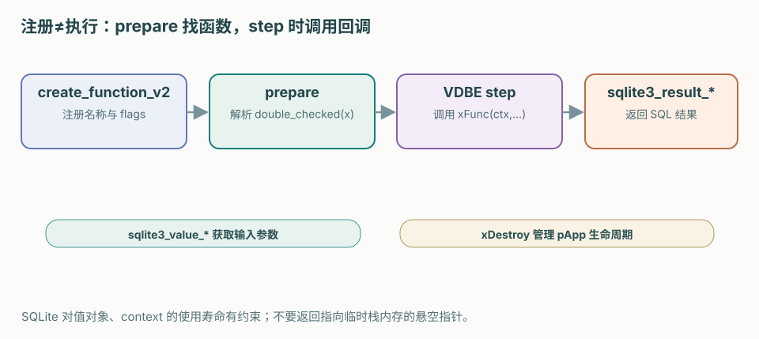
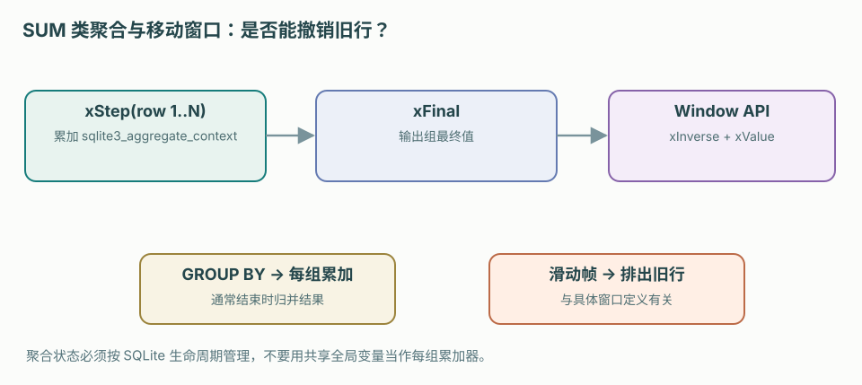
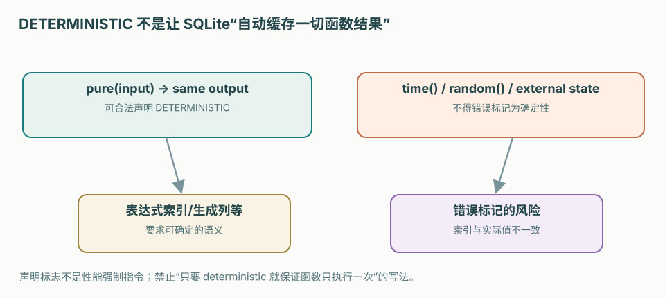

SQL 函数的真实执行：标量、聚合与窗口回调
函数名解析发生于 prepare，参数值和计算发生于 step。沿 sqlite3_create_function_v2、sqlite3_value、aggregate_context 和 deterministic 标志理解函数扩展的生命周期与安全边界。
1. SELECT double_checked(n) 调用的是谁的代码？
SQLite 允许应用通过 sqlite3_create_function_v2() 注册自己的 SQL 函数。例如给连接登记一个名为 double_checked、接受一个参数的函数，之后 SQL 引擎在解析表达式时可找到它对应的函数定义，再由 VDBE 在执行期把当前参数值交给应用提供的 C 回调。注册函数并不意味着立即执行回调。

回调接收 sqlite3_context*、参数个数和 sqlite3_value**，通常使用 sqlite3_value_*() 读取，使用 sqlite3_result_*() 返回。C 代码不应把传入值的指针永久保存，也不应把指向栈局部数组的地址当作持久 TEXT 返回。应用定义函数的官方文档对生命周期与析构器有完整约定。
2. 标量函数的类型、NULL 与错误处理
对于 SQL 值，SQLite 区分 NULL、INTEGER、REAL、TEXT、BLOB 等 storage class。如果 double_checked(NULL) 应返回 NULL，回调必须显式处理；如果只接受 INTEGER，则遇到 TEXT 时应决定是按规则转换还是拒绝。仅靠 sqlite3_value_int64() 不检查类型，可能把非数字文本转成 0，改变你声称的函数语义。
static void double_checked(sqlite3_context *ctx, int argc, sqlite3_value **argv) {
(void)argc;
if (sqlite3_value_type(argv[0]) == SQLITE_NULL) {
sqlite3_result_null(ctx);
return;
}
if (sqlite3_value_type(argv[0]) != SQLITE_INTEGER) {
sqlite3_result_error(ctx, "integer argument required", -1);
return;
}
sqlite3_int64 x = sqlite3_value_int64(argv[0]);
/* 完整实验还检查 x*2 是否发生 64-bit 溢出 */
sqlite3_result_int64(ctx, x * 2);
}上述片段只展示控制流，完整的 examples/19_functions.c 包含溢出检查、注册、SQL 查询、结果断言和内存清理。正式库中应明确处理输入类型、错误字符串、应用自有内存与应用回调线程安全边界。
函数注册的命名与重载
函数注册关联名称、参数个数、编码与函数属性。SQLite 也允许同名不同参数个数或编码选项。不要直接把某个版本内部 FuncDef 结构体字段写成公开 ABI；应用应该依赖 sqlite3_create_function_v2() 等文档化 API。
3. 为什么 COUNT / SUM 不是每行返回一个值？
聚合函数通常先对查询组内每一行调用 xStep()，把中间状态保存在 sqlite3_aggregate_context() 获取的私有区域，等该组结束时调用 xFinal() 形成最终 SQL 值。这一状态属于聚合调用，不应该由应用共享一个全局变量承载所有 GROUP BY 组的数据。

例如自定义聚合 sum_squares(x) 在 xStep 中计算输入平方的累积和，在 xFinal 输出结果。即使算式简单，也需要考虑 SQL NULL、内存分配失败、整数溢出与空输入。最小示例使用固定的小整数避免溢出，但仍按 C API 的状态管理契约写代码。
| 函数类型 | 核心回调 | 运行语义 |
|---|---|---|
| 标量 scalar | xFunc | 表达式求值所需时返回一个值 |
| 聚合 aggregate | xStep、xFinal | 每组累积，再形成最终结果 |
| 窗口 window | xStep、xInverse、xValue、xFinal | 维护可移动窗口帧的状态 |
4. 窗口函数与普通聚合的边界
窗口函数可以通过 OVER (PARTITION BY ... ORDER BY ... ROWS ...) 控制分区、排序与窗口帧。内置 row_number()、lag()、sum() OVER (...) 各有不同语义。应用也可以调用 sqlite3_create_window_function() 提供自定义窗口聚合，暴露 xInverse 以便从窗口移除离开的行。
CREATE TABLE scores(grp TEXT, n INTEGER);
INSERT INTO scores VALUES('A',1),('A',2),('A',3),('B',7);
SELECT grp, n,
SUM(n) OVER (PARTITION BY grp ORDER BY n
ROWS BETWEEN 1 PRECEDING AND CURRENT ROW) AS moving
FROM scores
ORDER BY grp, n;
-- A: 1, 3, 5；B: 7注意窗口函数允许的表达式位置与 OVER 语义由 SQL 语言文档决定，不能简单说“所有聚合函数加上 OVER 就有相同的语义”。对某些需要特殊处理的内置窗口函数，SQLite 在底层使用自定义实现，API 示例并不保证能复制全部内核优化。
5. SQLITE_DETERMINISTIC 不是任意缓存承诺
如果一个函数对相同输入总给出相同输出，并且不读取外部时间、随机数或可变状态，则它可能适合声明 SQLITE_DETERMINISTIC。SQLite 会据此决定某些 schema 表达式场景是否允许它出现，例如表达式索引、部分索引等。错误把具有外部状态的函数标为 deterministic，可能造成索引与查询结果的逻辑不一致。

官方 确定性文档对日期时间函数还列出了与参数有关的确定性边界。无论实际优化器会不会选择折叠函数调用，都不能因为设置了这个 flag 就写测试断言“某个自定义函数必然只执行一次”。
6. 将 C 回调真正编译为可运行的 SQL 功能
代码文件 examples/19_functions.c 注册了 double_checked（标量）与 sum_squares（聚合），使用内存数据库进行执行测试：
cc -std=c11 -Wall -Wextra -Werror -O2 \
examples/19_functions.c -lsqlite3 -o /tmp/19-func
/tmp/19-func
# 断言 double_checked(7)=14
# 断言 sum_squares(1,2,3)=14
# 检查 double_checked(NULL) 返回 SQL NULL仓库还增加 examples/19_windows.sql 使用 SQLite 内置窗口函数，方便不具备 C 编译器的读者观察完整示例。与其依赖编造的源码字段，这种实验能确定一条函数语义是否在本机库中成立。
审查你自己的自定义函数
- 函数是否明确规定 NULL/类型/溢出行为？
- 聚合状态是否由 aggregate_context 管理，并为分组隔离？
- 是否误把读取外部状态的函数标为 DETERMINISTIC？
- 是否按文档处理文本结果的所有权与应用数据析构器？
自测：什么情况下 DETERMINISTIC 不成立？
相同参数有机会因时间、随机数、文件内容、全局变量或外部系统状态而返回不同结果，就不能声称函数具有稳定确定性；即使本机运行几次恰巧相同也不构成证明。
下一章把函数接口升级到“按行提供数据的模块”：SQLite 虚拟表。
官方来源与版本边界
本章依赖公开 SQLite C API；内部 FuncDef 字段、优化器执行次数等不是跨版本 ABI。C 示例明确标注运行环境与溢出边界。
- Application-Defined SQL Functions · SQLite 官方
- Built-In Scalar SQL Functions · SQLite 官方
- Window Functions · SQLite 官方
- Deterministic SQL Functions · SQLite 官方
- Function Flags · SQLite 官方